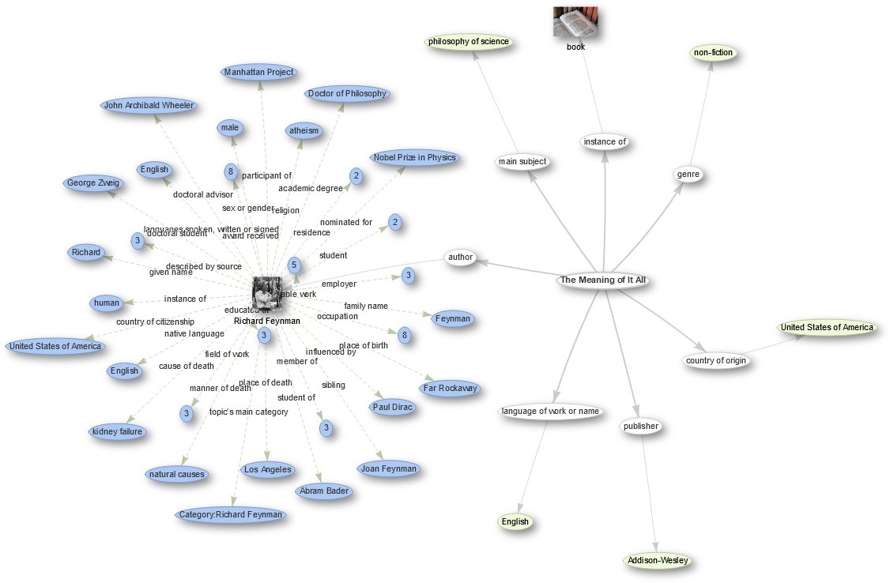

Content from What is Wikidata?
Last updated on 2024-10-21 | Edit this page
Estimated time: 30 minutes
Overview
Questions
- What are Items and Statements?
- How does the Wikidata interface look like?
- How is Wikidata linked to other Wiki projects?
Objectives
- Feel comfortable describing Wikidata to colleagues.
- Learn about Wikimedia projects (e.g. Wikipedia, WikiCommons) and Wikidata is related to them.
- Know why linked open data is important in my work as a cataloging or teaching librarian.
- Know able identify components of a Wikidata item page, how Wikidata is organized and how to navigate in it.
What is Wikidata?
Wikidata’s description explains that “Wikidata is a free and open knowledge base that can be read and edited by both humans and machines.” Wikidata functions as the central database for a variety of Wiki projects, including Wikipedia, Wiktionary, and Wikisource, among others.
Most users will be familiar with Wikpedia, which describes itself as “a free encyclopedia, written collaboratively by the people who use it. It is a special type of website designed to make collaboration easy, called a wiki. Many people are constantly improving Wikipedia, making thousands of changes per hour. All of these changes are recorded in article histories and recent changes.”
Wikidata contains various data types (e.g. text, images, quantities, coordinates, geographic shapes, dates). The data can be queried via a query interface called SPARQL, which we will cover later in this lesson. Data is published under the Creative Commons Public Domain 1.0 license. It can be modified, copied, and distributed without permission.
Wikidata also contains authority files, bibliographic data, and other content normally managed in library databases.
Importantly, Wikidata can be interlinked to other open data sets on the linked data web.
Motivation and “Why should I use Wikidata”
Knowledge Integration and Access: Wikidata offers an open and structured way to interlink various identifiers (like ORCID, GND, or VIAF). This is essential for librarians who manage resources and need to ensure that different systems and databases can communicate with each other seamlessly.
Authority Control: Librarians often work with authority files like GND or VIAF to ensure consistent naming conventions. Wikidata helps to map and retrieve these identifiers, making cataloging more efficient.
Real-World Use Cases:
- Scholia: A tool built on top of Wikidata that visualizes scholarly profiles and research outputs, showing the impact of Wikidata in academic and research contexts. Librarians can showcase Scholia as a tangible example of how data in Wikidata is used for research and scholarship.
- Crosswalks between systems: Wikidata’s ability to link various identifiers (e.g., connecting ORCID to GND or VIAF) is beneficial for cross-referencing and data cleaning in library management systems.
- Global and Collaborative Nature: Wikidata is a collaborative platform where librarians can contribute and maintain data, ensuring that their records stay relevant and up to date within a global information network.
1.1 Intro interface
Let’s try this out in the next section of this lesson and see if we as humans can simply read the data on Wikidata:
-
Explore a Wikidata Item page:
- Start by going to the Wikidata Main Page by typing “www.wikidata.org” into your browser. This is what you should see:

Screenshot of Wikidata Main PageNow go to the search bar in the top right corner and enter “british library”. This will give you a list with search results. Click the entry that says: “British Library (Q23308) national library of the United Kingdom”. Now you should see the british library’s item page: https://www.wikidata.org/wiki/Q23308
-
Let us explore the item British Library (Q23308). The top part of the item page serves for identifying the item. It has:
- unique identifier (Q + a number)
- label
- description
- aliases
-
The bottom part is the “statement” section, that adds statements to the item. A statement has:
- property (P + a number)
- value
- qualifier (optional)
- references (optional)
- is a so called triple which will be explained later
- As you can see a property can have multiple values for one property; for example “member of”; can be further specified by qualifiers (not showen on item British Library).
All these new definitions like statements, qualifiers and so on can be confusing. If you are not sure you can check this overview graphic https://upload.wikimedia.org/wikipedia/commons/a/ae/Datamodel_in_Wikidata.svg:

-
Usually pages can be edited by anyone; click the pen on the upper-right; Q23308 - British Library is semi-protected; don’t worry if you made a mistake, you can always go back in history
- “View history” - more later
- “Log in” and other things for registered users
All structured data is under the creative Creative Commons CC0 License: “The person who associated a work with this deed has dedicated the work to the public domain by waiving all of his or her rights to the work worldwide under copyright law, including all related and neighboring rights, to the extent allowed by law. You can copy, modify, distribute and perform the work, even for commercial purposes, all without asking permission.” from https://creativecommons.org/publicdomain/zero/1.0/
-
Further Link describing Wikidata in one page (visual)
1.2 Play games to open
- Visit the Wikipedia page of the city you were born in two languages of you choice (you can choose different language version in the left side of a Wikipedia page) and look the size of the population. Are the numbers the same in the different language? Visit the item in Wikidata.
1.3 Wikidata Item Eastereggs
1.4 Linking Wikidata to other Wiki resources
- Link from Wikipedia to Wikidata
- e.g. https://en.wikipedia.org/wiki/On_the_Origin_of_Species
- => Follow the link “Wikidata item” on the left side under “tools”
- => https://www.wikidata.org/wiki/Q20124
- => the Wikipedia article is linked on the Wikidata’s item page. You can find it on the right side.
- => link to WikiCommons and WikiSource
- e.g. https://en.wikipedia.org/wiki/On_the_Origin_of_Species
- Item
- Statement
Content from Underlying concepts of Wikidata
Last updated on 2023-04-24 | Edit this page
Estimated time: 0 minutes
Overview
Questions
- What is a RDF triple?
- What are the underlying components of RDF?
Objectives
- Know what a triple is, and relate structure of a Wikidata statement to traditional metadata field structure
- Know how linked data can create more context for patrons/users in library catalogs
- Know how linked data can improve recall in library catalogs? (TODO: Check if we want to address this here).
2.1 Concepts foundations: ways of storing data.
There are many types of databases, the most common types are:
2.1.1 Relational databases:
A relational database is a set of formally described related tables
from which data can be accessed or reassembled. This model organizes
data into one or more tables (or “relations”) of columns and rows, with
a unique key identifying each row. each table/relation represents one
“entity type” and these entities are connected via constrained
relationships. This model is fully structured and mostly uses SQL
(Structured Query Language) to retrive and manuplate data.
Examples:
2.1.2 Graph / Semantic databases
Semantic web is an extension of the World Wide Web standards, which promote common data formats and exchange protocols on the Web, most fundamentally the Resource Description Framework (RDF) is used to store data. Most RDF fundamentally uses SPARQL (Simple Protocol and Rdf Query Language) to read stored data while relational databases uses SQL (Structured Query Language) to do so. In SQL relational database terms, RDF data can also be considered or viewed as a table with only three columns – the subject column, the predicate column, and the object column.

2.2 Concepts foundations (RDF and RDF triples)
The RDF is a conceptual data model, It is based on the idea of making statements about resources in expressions of the form (subject–predicate–object), known as triples.
The subject denotes the resource, and the predicate denotes traits or aspects of the resource, and expresses a relationship between the subject and the object, for example: John-is-a person, John-born in-1980, John-works as-Engineer
RDF data are stored on containers known as triplestores.
2.3 Underlying components
- Items
Items represents subjects such Douglas Adams and have identifiers that starts with letter “Q” like: Q42 for Douglas Adams.
Each item must have a name in one or more langauges, optionally have alternative names and descrition. - Properties
Properties represents attributes of the subject such occupation and have identifiers that starts with letter “P” like: P106 for Occupation. - Claims
Claims are the triples, which combine the formation of Item and Property and a value such: Douglas Adams (Q42) - occupation (P106) - comedian.
Note: value can be already stored in wikidata, therefore the bot assigns the Q number of the value instead. - Statement
A Claim is a part of a statement, a statement also includes: References, Ranks, and Qualifiers. - References
Used to store the source of the claim, using properties, such stated in, qoute, and etc. - Ranks
A useful component to mark outdated claims. - Qualifiers
Qualifiers are besicly properties but on claims rather than items.
Is data stored in the RDF triple format part of your work as a librarian?
Take some time to think about if data stored in the RDF triple format is part of your work as a librarian. Can you give an example in the format of an RDF triplet?
TO DO: PLEASE ADD A REAL LIFE EXAMPLE
Point out one RDF triple on the Wikidata item page of former astronaut Mae Jemison.
Got to the Wikidata page of Mae Jemison and point out one RDF triple. An RDF triplet consists of a subject, a predicate and an object. Can you assign the three corresponding Wikidata terms?
Got to Wikidata and either search for “Mae Jemison” or enter the ID
Q34091. In the picture below the statement “Mae C. Jemison -
part of - NASA Astronaut Group 12” is an RDF triple. 
Screenshot of Wikidata Main
Page
2.4 Scholia - a webserive with Wikidata as underlying database
- Introduction with The Linked Open Data Cloud
- the structure enables queries
- reference to DBPedia
- you can build your own web services with Wikidata as database >
Scholia
- e.g. search for Alex Bateman
2.5 Wikidata one pager
2.6 How Wikidata compares with other data sets
FIXME
- First key point. (FIXME)
Content from Introduction to editing
Last updated on 2024-01-11 | Edit this page
Estimated time: 0 minutes
Overview
Questions
- How to create and edit a Wikidata item?
Objectives
- Be able to create and edit a Wikidata entry.
- Know properties and relations, and where to find lists of approved properties and relations.
- Be able to add new statements that link to other items.
- Be aware of property constraints.
- Know community norms around Wikidata and why they are important.
- Be able to add references appropriately.
- Know what identifiers are and how to add them to a statement.
- Know different stable identifiers (e.g. ORCID for authors, DOI for works) and why makes sense to use them as properties.
- Know the correct use of properties.
3.1 Introduction
Here we will work in the test instance of Wikidata so you will not break anything. Also keep in mind that the editing history is kept in Wikidata so error can also be easily fixed there. The test instance is cleaned regularly. You can quickly figure out if you are on the Wikidata instance (colored logo) or the test version (black-and-white only).
3.2 Create new items
In the following we will create new items. In order to avoid to fill Wikidata with test entries, we will use the test instance (https://test.wikidata.org/) and not the official, production version (https://wikidata.org/).
Go to the test instance at https://test.wikidata.org/
Click “Create a new Item” link on the left site. You will see a form that looks like this:
- Please fill the form. You can now add an entry about anything you want like a book, a research article or and author. We will generate an entry of Mae Jemison an American engineer, physician and NASA astronaut. You can also add yourself (if you feel famous enough). We choose “en” int the Language drop-down menue, write “Mae Jemison” in the Label field, “an American engineer, physician and NASA astronaut.” in the Description field and “Mae Carol Jemison” in the Aliases field.

- Once we are done we click click “Create”. You should see you newly created article. The URL, the adress shown in your web browser, should contain “Q” and some number that is unique for this entry at the end.

You can compare the entry that you have generated on the test instance with the current version of the item in Wikidata (Q34091).
3.3 Add Statements - birth reference
Why Wikidata uses references: Like in Wikipedia it is important that content can be verified by others to make sure it is correct and comes from a reliable source of information, such as a book, scientific publication, or newspaper article. A Reference (or source) is used to point to specific sources that back up a claim in Wikidata. A reference can be a link to a URL or an item; for example, a book. Wikidata does not aim to answer the question of whether a statement is correct, but only whether the statement appears in a reference.
Task:
-
Support a statement by reference
- Add the birth date (October 17, 1956) of Mae Jemison as a statement using property P569 “date of birth” to the “Mae X Jemison” item you created above.
- Afterwards add a reference to the satement with the following url as the source: https://www.biography.com/astronaut/mae-c-jemison
3.4 Add Statements - Add ID to Mae Jemison
Task: Support a person by it’s IDs. Give the participtants the identifiers and source page for an ID and let them add it on the Mae Jemison item on the test instance of Wikidata:
- VIAF ID
- identifier: 33699121
- source page: https://viaf.org/viaf/33699121/
- Library of Congress authority ID
- identfier: n95004729
- source page: http://id.loc.gov/authorities/names/n95004729.html
- IMDb ID
- identifier: nm0420648
- source page: https://www.imdb.com/name/nm0420648/ Site note:
- ORCID is an often used ID, in this case Mae Jemison doesn’t have one, but it’s good to mention ORCID anyway.
3.5 Norms and good practices
- Customization of languages for user interface
- Wikidata “item” vs. “article” vs. “entry”
- Policies for
- Books
- create new items
- add new statements
Content from Advanced editing
Last updated on 2025-09-29 | Edit this page
Estimated time: 0 minutes
Overview
Questions
- How to automatically add statements with sourcemd and quickstatements?
Objectives
- Be familiar with some tools for editing, e.g. TABernacle, Wikidata Games, QuickStatements, Source MetaData or Author Disambiguator/Author resolver.
4.1 Disclaimer
The tools are under heavy development and due to that they might change or don’t work as expected. If that happens just move on to the next episode.
4.2 Introduction
So now we will work in the productive version. We will use DOI to automatically put an article into Wikidata via sourcemd. If you are familiar in Life Science you can use our example with PubMed for finding DOIs of new article, optional you can choose an journal related to your scientific field. Sourcemd gets it metadata from Crossref, also look to sourcemd:instructions
Potential open access journal:
4.3 Adding statements via sourcemd and quickstatements
Go to pubmed, scroll
down to “latest literature” and select an article: 
Save the DOI, PMID or PMCID of the article:
Go to sourcemd and paste the DOI or PMID into the search field:

Click on “check source”. Now you can see automatically generated statements including meta data of the article like author names or date of publication. Click on “Open in QuickStatements”.

A new window with QuickStatements will pop up. Now you’ll get an overview of the new item and its statements. Confirm the changes by hitting the the “run” button:
4.4 (OPTIONAL) Converting “author strings” to “author”
Find Author Strings Author Disambiguator
- First key point. (FIXME)
Content from Introduction to querying
Last updated on 2024-10-01 | Edit this page
Estimated time: 0 minutes
Overview
Questions
- What is SPARQL?
- How to use SPARQL to query Wikidata?
- How to use Wikidata querying tools?
Objectives
- Know what a query language is, and how SPARQL differs SQL.
- Be able to use SPARQL to query Wikidata.
- Potentially be able to use a tool like TABernacle to edit based on a query.
- Have a cursory knowledge of the plethora of Wikidata querying tools and how they can be used by librarians.
- Know the purpose and usefulness of maintenance queries for identifying missing information.
- Be able to create maintenance queries.
FIXME
There are different ways to query information in Wikidata. The simplest way is to search for an entry in Wikidata and looking up all information for that entry, e.g. search for Richard Feynmann. This search looks by default in the Q-pages as well as the P-pages. However, we can restrict a search for a property by only looking in the P-pages, e.g. if we want to look whether there is property for the ISBN we can restrict that search to properties only. Moreover, for a given entry there is always the possibility to see other pages which links to that (e.g. using it as an object), e.g. all pages linking to Richard Feynman: https://www.wikidata.org/wiki/Special:WhatLinksHere/Q39246
That is not much different from other searches you may be familiar with. However, the real potential of Wikidata as a huge knowledge graph, can be experienced through more advanced querying with the Wikidata query service where the queries have to entered in SPARQL.
% To discover Wikidata objects nearby there is the nearby search: % https://www.wikidata.org/wiki/Special:Nearby
5.1 What is SPARQL?
SPARQL is a query language for RDF data and is a W3C recommendations since 2008. The data has to be stored as triples where the object of one triple can be the subject of another triple. Thus, one can think about a huge knowledge graph, where the nodes are connected by the predicates with other nodes. For example here we see all the information about the book “The Meaning of It All” from Wikidata as a graph:
 %
source: http://tinyurl.com/y267yz5q
%
source: http://tinyurl.com/y267yz5q
However, this is only the graph spanned by one item and its connected entries, which then itself also have more connections, e.g. we can open some links from the author Richard Feynman:
 % click on that node in the above query
For querying data now in this knowledge graph with SPARQL we define some graph patterns which we want to search. The simplest form is a triple where we replace one of the components with a variable, which is indicated by a string starting with a question mark:
- Query for the publisher:
{ wd:Q7750812 wdt:P123 ?publisher . } - Query for the connection:
{ wd:Q7750812 ?property wd:Q353060 . } - Query for the publications from Addison-Wesley:
{ ?book wdt:P123 wd:Q353060 . }
5.2 Wikidata Query Service
The Wikidata query service can be found at https://query.wikidata.org/. There is the main window on the right to formulate your query in SPARQL. On the left there is the query helper and at the bottom the result will show up.
We will only cover here SELECT-statements and start by
typing
SELECT * WHERE {
}Hint It is enough to start typing “SELECT” and then use the auto-completion with Ctrl+Space. % TODO what is this for on a Mac?
Inside the parenthesis you can then place the statements describing the graph pattern you are looking for.
Exercise: Your first SPARQL query
Write your first SPARQL query for the publisher of the above mentioned book by copying the part from above point inside a SELECT-statement.
SELECT * WHERE {
wd:Q7750812 wdt:P123 ?publisher .
}Namespaces and Prefixes
Prefixes are short abbrevations in the Wikidata Query Service. Some prefixes in Wikidata are: wd, wdt, p, ps, bd, etc.
Example:
SELECT ?item ?itemLabel
WHERE
{
?item wdt:P50 wd:Q23434.
SERVICE wikibase:label { bd:serviceParam wikibase:language "[AUTO_LANGUAGE],en". }
}Items should be prefixed with wd: and properties with wdt: .
Namespaces in Wikidata are:
- Main namespace
- Property
- Wikidata: it is for information and discussions about Wikidata itself. etc.
More conditions
- publications from Addison-Wesley vs. books from Addison-Wesley vs. books authored by Richard Feynman from Addison-Wesley
- LIMIT
- ORDER
- FILTER
- OPTIONAL
How to visualize your query
Manual visualization in the results window:
Start by opening the results window. In the results pane, click the “Table” button and choose the type of visualization you want. This way, you can try different ways of visualizing your data without having to change the query code.
Automated visualization with #defaultView:
For an easy start, add the #defaultView: snippet at the beginning of your query. This method ensures that your results will be automatically visualized in a predefined style. This will save you time without having to manually adjust the result window after each query. This method is useful for queries where you already know which visualization types you want to use.
5.3 Try examples
Enough theory! it’s time to get hands-on. Let’s start with a simple example. Literally everyone likes cats, right? So lets search for them in the Wikidata database.
Cats example
SELECT ?item ?itemLabel
WHERE
{
?item wdt:P31 wd:Q146. # Must be of a cat
SERVICE wikibase:label { bd:serviceParam wikibase:language "en,[AUTO_LANGUAGE]". } # Helps get the label in your language, if not, then en language
}Alright! So we found all the cats. But I am pretty sure that I have seen pictures of cats somewhere in Wikipedia or Wikidata. Is there a way to display the images in the Wikidata query service? The simple answer is yes! Let me show you how to do it.
Cats pictures
In the first step, we searched for cats. It is also possible to search for images in Wikidata, if they are available. The Wikidata query service offers several types of visualization. The image grid is a good way to display images.
#defaultView:ImageGrid
#Normally, the default output is a table, but with the defaultView we can directly specify that the results should be displayed in a grid
SELECT ?item ?itemLabel ?itemPic
#Show me the item, label and the picture of it
#The result list will look like this (wd:Q123185365/senior cats/ commons:Оредеж, Железнодорожная 9, кот (cropped).jpg)
WHERE
{
?item wdt:P31 wd:Q146. #The item of this search is a cat
?item wdt:P18 ?itemPic. #Show me only cats with pictures. If you want to include very cats in your search, you need to place the Option{} function in front
SERVICE wikibase:label { bd:serviceParam wikibase:language "[AUTO_LANGUAGE],en". }
#Helps to get the label in English. If not, yours will be selected automatically
}

Wow that was quit a lot of Code, hasnt it. lets break it down so you understand the synatx better.
Lets move on to another example
Worldmap of libraries
#defaultView:Map
#Display the results as a Map
SELECT distinct *
#Display all available geographic coordinates
WHERE {
?item wdt:P31 wd:Q7075; #Define the item as a library ";"(and) define the geographic coordinates of item as ?geo
wdt:P625 ?geo.
}Map of libraries in the USA
#defaultView:Map
#Display the results as a Map
SELECT ?itemLabel ?geo
#Display the label and the geographical coordinates of the item
WHERE {
?item wdt:P31 wd:Q7075. #Define the item as a library
?item wdt:P625 ?geo. #bind the geographic coordinates as ?geo
?item wdt:P17 ?country. #bind the country of item as ?country
FILTER(?country = wd:Q30) #Use Filter to set Country to wd:Q30(U.S.A)
SERVICE wikibase:label { bd:serviceParam wikibase:language "en,[AUTO_LANGUAGE]". }
#Helps to get the label in English. If not, yours will be selected automatically
}Map visualization toolbox for libraries
#defaultView:Map
#Display the results as a Map
#the main query-----------------------------------------------------------------------
SELECT DISTINCT ?itemLabel ?geo #(?itemLabel AS ?layer)
#Show the label and geographic coordinates of the item
#Remove the „#“ before „(?itemLabel AS ?layer)“ to filter the result list.
WHERE {
?item wdt:P31 wd:Q7075; #Define the item as a library
wdt:P625 ?geo. #Get the Coordinates of the library
#Advanced Query Options-----------------------------------------------
#Bind the attributes you need to filter them later.
?item wdt:P17 ?country. #Bind the country of item to ?country
?item wdt:P131 ?stateORcity. #Bind the territory of item to ?stateORcity
#Filter---------------------------------------------------------------
#Select only one filter at a time to filter between country, state, and city.
#FILTER(?country = wd:Q30) #Set ?country to U.S.A(wd:Q30)
#FILTER(?stateORcity = wd:Q1261) #Set ?StateOrCity to Colorado(wd:Q1261)
#FILTER(?stateORcity = wd:Q16554) #Set ?StateOrCity to Denver(wd:Q16554
#--------------------------------------------------------------------
SERVICE wikibase:label { bd:serviceParam wikibase:language "[AUTO_LANGUAGE],en". }
#Helps to get the label in English. If not, yours will be SELECTed automatically
}
Count of libraries per Country
#defaultView:BarChart
#Display the results as a Bar Chart
SELECT distinct ?country ?countryLabel (COUNT(?item) as ?Count)
#Show me the genre, the genre label, and count the available books as a new label ?bookCount
#The result list will look like this (wd:Q213051/Non-Fiction/252)
WHERE {
?item wdt:P31 wd:Q7075; #Define the item as a library ";"(and) define the country of item as ?country
wdt:P17 ?country.
SERVICE wikibase:label { bd:serviceParam wikibase:language "en,[AUTO_LANGUAGE]". }
#Helps to get the label in English. If not, yours will be selected automatically
}
Group by ?geo ?geoLabel
#Aggregate with the group function
Order by DESC(?Count)
#Order result list by variable ?count in descending order
LIMIT 10
#Limit the shown results down to 10.
Books weight by genre Number of available books weighted by genre.
#defaultView:BubbleChart
#Display the results as a Bubble Chart
SELECT ?genre ?genreLabel (COUNT(?book) as ?bookCount)
#Show me the genre, the genre label, and count the available books as a new label ?bookCount
#The result list will look like this (wd:Q213051/Non-Fiction/252)
WHERE
{
?book wdt:P31 wd:Q571. #Searched item is a book
?book wdt:P136 ?genre. #Get the attribute genre form item
SERVICE wikibase:label { bd:serviceParam wikibase:language "en,[AUTO_LANGUAGE]". }
#Helps to get the label in English. If not, yours will be selected automatically
}
GROUP BY ?genre ?genreLabel
#Aggregate with the group function
LIMIT 15
#Limit the shown results down to 15.Map of NFDI Consortia in Germany
#defaultView:Map
#Display the results as a Map
SELECT DISTINCT ?affiliateLabel ?affiliatepicture ?coordinates ?NFDILabel (?NFDILabel AS ?layer)
#Show me the label, image, and coordinates of the affiliate parties.
#Show me the NFDI label as well, using the NFDILabel as a layer filter.
#The layer filter lets you choose which NFDI to display on the map.
#The result list will look like this (Deutsche Nationalbibliothek/commons:DNB.svg/NFDI4Culture/Point(8.683333333 50.131111111))
WHERE
{
?NFDI wdt:P31 wd:Q98270496. #Searched item is an accepted NFDI
?NFDI wdt:P1416 ?affiliate. #Get the affiliates of the accepted NFDI.
?affiliate wdt:P625 ?coordinates. #Get the coordinates of the affiliate parties
OPTIONAL { ?affiliate wdt:P17 ?country } #Get attribute country if available
OPTIONAL { ?affiliate wdt:P154 ?affiliatepicture } #Get attribute picture if available
FILTER(?country = wd:Q183) #Use Filter to set country to wd:Q183(Germany)
SERVICE wikibase:label { bd:serviceParam wikibase:language "en,[AUTO_LANGUAGE]" . }
#Helps to get the label in English. If not, yours will be selected automatically
}
Number of participants in NFDI consortia
#Number of participants in NFDI consortia
#defaultView:BarChart
#Use the bar chart as the visualization type and give me the results immediately in the form of a bar chart.
SELECT DISTINCT ?NFDIKLabel (COUNT(DISTINCT ?participants ) as ?participantsCount)
#Give me the unique (no double entries) names of the accepted NFDIK consortia.
#Count the participants using the COUNT function and return the number of participants as a new variable ?participantsCount.
WHERE
{
?NFDIK wdt:P31 wd:Q98270496. #Give me all accepted NFDI consortia.
?NFDIK wdt:P710 ?participants. #Show me the all participants of this NFDI consortium.
#Attention: Not all consortia are listed here, but only those that have an entry participants in Wikidata.
#Participants can be researchers, research institutions, universities, companies and many more.
SERVICE wikibase:label { bd:serviceParam wikibase:language "en,[AUTO_LANGUAGE]" . }
#Helps to get the label in English. If not, yours will be selected automatically
}
GROUP BY ?NFDIKLabel
#Group by NFDIK
HAVING (?participantsCount > 4)
#Show me only NFDI consortia that have more than four registered participants.

NFDI Consortia in Berlin, Germany
#defaultView:Graph
#Use the graph as the visualization type
SELECT ?affiliate ?affiliateLabel ?affiliatepicture ?NFDIK ?NFDIKLabel ?NFDIKpicture
#Give me the label and the pictures of the affiliated parties of the accepted consortia of the NFDIK.
#Give me label and pictures of accepted NFDIK consortia.
WHERE
{
?NFDIK wdt:P31 wd:Q98270496. #Get me all accepted NFDI consortia.
?NFDIK wdt:P1416 ?affiliate. #Get the affiliates of the accepted NFDI.
?affiliate wdt:P131 ?location. #Provide me with the location of the affiliated parties.
FILTER(?location = wd:Q64) #Set the location to Berlin.
OPTIONAL { ?affiliate wdt:P154 ?affiliatepicture } #Give me the pictures of the affilated partner, if available.
OPTIONAL { ?NFDIK wdt:P154 ?NFDIKpicture } #Give me the pictures of the NFDI, if available.
SERVICE wikibase:label { bd:serviceParam wikibase:language "en,[AUTO_LANGUAGE]" . }
#Helps to get the label in English. If not, yours will be selected automatically
}
scholarly articles by Alex Bateman
SELECT ?item ?itemLabel ?journalLabel
WHERE
{
?item wdt:P31 wd:Q13442814.
?item wdt:P50 wd:Q18921408.
?item wdt:P1433 ?journal.
SERVICE wikibase:label { bd:serviceParam wikibase:language "en,[AUTO_LANGUAGE]". }
}Russian poets
SELECT ?item ?itemLabel ?place ?placeLabel ?coord
WHERE
{
?item wdt:P31 wd:Q5.
?item wdt:P106 wd:Q49757.
?item wdt:P19 ?place.
?place wdt:P17 wd:Q159.
?place wdt:P625 ?coord
SERVICE wikibase:label { bd:serviceParam wikibase:language "en,[AUTO_LANGUAGE]". }
}chemicals example
SELECT ?item ?itemLabel WHERE {
?item wdt:P31 wd:Q11173, wd:Q12140.
SERVICE wikibase:label { bd:serviceParam wikibase:language "en,[AUTO_LANGUAGE]". }
}SELECT ?item ?itemLabel ?struc ?formula
WHERE {
?item wdt:P31 wd:Q11173, wd:Q12140.
?item wdt:P117 ?struc.
?item wdt:P274 ?formula
SERVICE wikibase:label { bd:serviceParam wikibase:language "en,[AUTO_LANGUAGE]". }
}SELECT ?item ?itemLabel ?formula ?mass ?struc
WHERE {
?item wdt:P31 wd:Q11173, wd:Q12140.
?item wdt:P117 ?struc.
?item wdt:P274 ?formula.
?item wdt:P2067 ?mass.
SERVICE wikibase:label { bd:serviceParam wikibase:language "en,[AUTO_LANGUAGE]". }
}
ORDER BY DESC(?mass)
LIMIT 10People born in Berlin filtered by year 1970
SELECT ?item ?itemLabel ?dob
WHERE
{
?item wdt:P31 wd:Q5.
?item wdt:P19 wd:Q64.
?item wdt:P569 ?dob.
FILTER(YEAR(?dob) = 1970)
SERVICE wikibase:label { bd:serviceParam wikibase:language "en,[AUTO_LANGUAGE]". }
}5.4 More Advanced queries
further links
https://commons.wikimedia.org/wiki/File:Wikidata_Query_Service_in_Brief.pdf
https://www.uni-mannheim.de/media/Einrichtungen/dws/Files_Teaching/Semantic_Web_Technologies/SWT05-SPARQL-v1.pdf
https://www.wikidata.org/wiki/Wikidata:SPARQL_tutorial- First key point. (FIXME)
Content from Advanced bulk updating, bots
Last updated on 2023-04-24 | Edit this page
Estimated time: 0 minutes
Overview
Questions
- How do you bulk upload to Wikidata?
Objectives
- Know how to run a bulk import into Wikidata.
- Be able to create items and/or claims using quickstatements.
- Be familiar with the tools used for bulk edits and imports.
- Be able to articulate how bulk import tools can apply to cataloging and digital science/archive projects.
- Know how to write effective queries in terms of performance. (TODO: may refine or improve or delete)
FIXME
Learning outcomes
Understand how to run a bulk import into Wikidata
practice using quickstatements? (module 3 already includes QuickStatements)
Be familiar with the tools used for bulk edits and imports
Tools for bulk upload: - Quick statements (https://www.wikidata.org/wiki/Help:QuickStatements)
Connect bulk import possibilities to cataloging and digital science/archive projects?
Understand how to write a good queries in terms of performance
6.1 Bulk uploads/harvests (lead to OpenRefine modules)
Test test test
6.2 Bulk edits
6.3 Bulk creation/harvesting
6.4 Performance
- First key point. (FIXME)